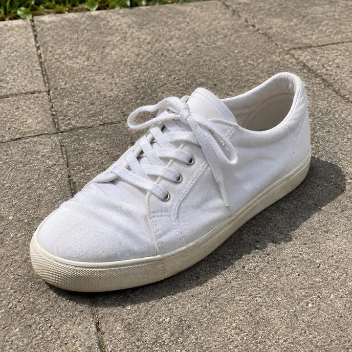
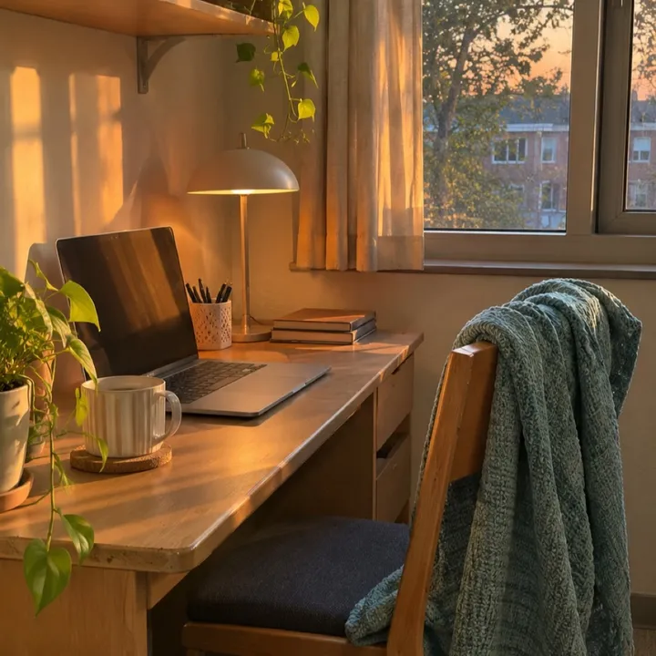

Je prends ces baskets ?
iPhone, iPad et Android · Bientôt disponible
Pose ta question dès que tu hésites et laisse la communauté voter d'un seul geste. Ceci ou cela, oui ou non, quelle note ? Découvre ce que tout le monde en pense en quelques secondes.

Je prends ces baskets ?
Question d'exemple · chiffres indicatifs
Chaque question est une carte. Tu réponds toujours au même endroit : sur la barre sous la carte. Essaie.
Soirée ciné ce soir ?
Une question, deux réponses. Glisse à gauche pour non, à droite pour oui.
 A
A
BOù étudier aujourd'hui ?
De 2 à 4 options, avec une photo ou quelques mots. Laisse la communauté trancher.
Quelle note pour mon nouveau bureau ?
Une note de 0 à 10. Le résultat affiche la répartition des notes et la moyenne.
Question d'exemple · chiffres indicatifs
Une minute pour demander, quelques secondes pour avoir des réponses.
Ajoute une photo et écris ta question en 99 caractères max. Choisis une catégorie et une durée : 10 minutes, de 1 à 24 heures, ou sans limite.
Ta question arrive dans Tendances et sur la Place de tes abonnés. Tout le monde vote d'un seul geste. Personne ne voit qui a voté quoi, seulement les chiffres.
Une fois le temps écoulé, le résultat est figé et on te prévient. Si tu veux, dis à tout le monde ce que tu as choisi au final.
Cinq onglets, une carte à la fois. Glisse vers le haut pour la question suivante.
Les questions de tout le monde, classées selon tes centres d'intérêt. L'app s'ouvre ici.
Les questions et les Resence des personnes que tu suis, puis des suggestions une fois que tu es à jour.
Toutes les questions sur lesquelles tu as voté, avec leur résultat.
Une question te plaît ? Repose-la à tes propres abonnés.
Commentaires publics et réponses. L'auteur peut les désactiver.
Reçois une alerte quand un résultat tombe, qu'on commente ou qu'on fait un Resence de ta question.
Envoie une question ou son résultat à tes amis sous forme de Story prête à l'emploi.
Un thème clair limpide, ou un thème sombre feutré pour tard le soir.
Sur Sence, personne n'est là pour te juger. On répond juste à ta question.
Pas de vrai nom, de numéro de téléphone ni de mot de passe. Choisis un pseudo et c'est parti.
Personne ne voit qui a voté quoi. Même l'auteur de la question ne voit que les chiffres.
Chaque photo est vérifiée avant d'être publiée. Les données de localisation sont supprimées directement sur ton téléphone.
Signale une question qui te dérange et bloque quelqu'un en un geste. Tu peux aussi passer ton compte en privé.
Sence est une communauté réservée aux adultes. Les propos grossiers sont bloqués avant publication.
Associe Apple ou Google pour ne pas perdre ton compte si tu changes de téléphone. Tu peux le supprimer depuis l'app.
Une app où tu poses tes questions sous pseudo quand tu hésites, et la communauté vote. Il y a trois formats : Oui/Non, Choix (2 à 4 options) et Note (0 à 10). « Sence » signifie « qu'en penses-tu ? » en turc.
Non. Sence est gratuit à télécharger et à utiliser.
Non. L'identité des votants n'est affichée nulle part. Tout le monde, y compris l'auteur de la question, ne voit que les pourcentages et le nombre de votes.
Ton compte est créé sur ton téléphone : tu choisis simplement un pseudo. Pour ne pas le perdre en changeant d'appareil, associe-le à Apple ou Google dans Réglages, puis utilise « J'ai déjà un compte » sur le nouveau téléphone.
C'est toi qui choisis : 10 minutes, 1, 6, 12 ou 24 heures, ou sans limite. Une fois le temps écoulé, le résultat est figé et tu reçois une notification.
Sence arrive très bientôt sur l'App Store pour iPhone et iPad (iOS 17.6 ou ultérieur) et sur Google Play pour Android.
En 16 langues : français, anglais, turc, allemand, italien, néerlandais, polonais, espagnol, portugais (Brésil), russe, arabe, japonais, coréen, chinois (simplifié), hindi et indonésien. Sence s'ouvre dans la langue de ton téléphone.
Sence arrive très bientôt sur l'App Store et Google Play. Tu pourras le télécharger depuis cette page dès le jour du lancement.